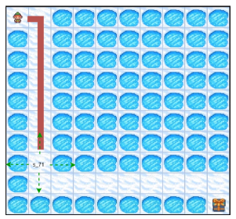
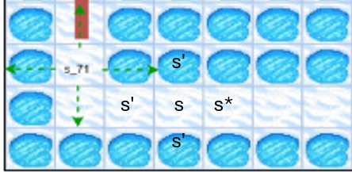
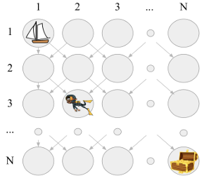
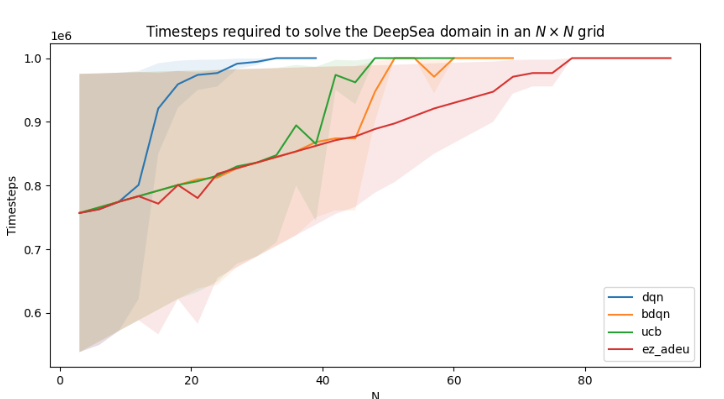

01Abstract
Adaptive exploration methods let an agent alternate between exploring and exploiting while it learns a complex policy. The key question is when to make that switch, and it matters most in domains that demand long, intricate sequences of actions. We present ADEU, a generic adaptive exploration framework that uses uncertainty to decide this in a principled way. ADEU includes previous adaptive exploration approaches as special cases, and it can be paired with any uncertainty-measuring mechanism — for example those used in intrinsic motivation or in epistemic-uncertainty-based exploration. Experiments show that instances of the framework outperform standard exploration strategies across several environments, and we discuss its potential for safety-critical applications. Our code is publicly available.
02Why adaptive exploration?
Exploration in a nutshell
Picture a long, narrow path across water toward a distant goal. An agent that always picks the action maximising uncertainty keeps stepping off the path — and drowns.
An adaptive agent behaves differently: where its uncertainty is low, it exploits what it knows and stays on the path; where uncertainty is high, it explores. That alternation is what lets it reach the goal.

03The ADEU framework
At each state, ADEU samples its action from a distribution centred on the learned policy, whose spread is set by how uncertain the agent is about that state.
One framework, many methods
Uses any uncertainty measure
f(s) can quantify novelty as in intrinsic motivation, or epistemic uncertainty as in uncertainty-driven exploration.
Subsumes prior work
Existing adaptive exploration methods appear as special cases — with a suitably sophisticated f, ADEU emulates them.
Gives rise to new methods
Plugging new mechanisms into f and g yields new adaptive explorers, such as ADEU + RND and ADEU + UCB.
Within-episode switching
ADEU alternates between exploration and exploitation inside a single episode, not only across training.
04Theoretical guarantees
Increasing-Reward Single-Agent Games (IR-SAGs)
A general class of games — covering sorting, ordering and searching for a sole trajectory — in which the reward motivates the agent to visit the truly high-value states. In every state s there is a unique action b that maximises reward and leads to the state s*, which offers more reward than anything reachable elsewhere.

Further guarantees
Efficient exploration
Assuming an efficient f(s), efficient exploration is guaranteed in sparse IR-SAGs (via hyper-states and hyper-actions) and in stochastic IR-SAGs.
Probabilistic bounds
For specific choices of f(s), probabilistic bounds are computed in tabular domains such as DeepSea and Frozen Lake.
05Experimental evaluation
Demanding control tasks — MuJoCo
We test two effective ADEU instances:
- ADEU + IM — f(s) is the novelty mechanism of intrinsic motivation (Random Network Distillation; Burda et al.).
- ADEU + UCB — f(s) is the UCB criterion over Q-ensembles that guides agents toward highly uncertain states (Chen et al.).
Both are compared with a naïve ADEU instance and with UCB, intrinsic motivation and Noisy Nets used as standard (non-adaptive) exploration.
Results on MuJoCo
| Domain | ADEU + IM | ADEU + UCB | Naïve ADEU | UCB | IM | Noisy Nets |
|---|---|---|---|---|---|---|
| Walker2d | 745 – 947 | 413 – 500 | 564 – 726 | 355 – 397 | 1 – 23 | 519 – 657 |
| Hopper | 733 – 1167 | 293 – 514 | 376 – 631 | 245 – 422 | 10 – 35 | 429 – 766 |
| Swimmer | 52 – 62 | 36 – 39 | 40 – 46 | 32 – 36 | −3 – −2 | 30 – 35 |
| Ant | 1072 – 1341 | 1134 – 1500 | 345 – 980 | 585 – 790 | −2658 – 980 | 364 – 981 |
| Humanoid | 313 – 345 | 512 – 658 | 86 – 132 | 89 – 149 | 85 – 132 | 75 – 88 |
| HumanoidStandup | 73895 – 79978 | 72978 – 80139 | 61511 – 64490 | 54928 – 56527 | 55211 – 56057 | 62152 – 63645 |
Return intervals as reported in the AAMAS 2026 presentation; shaded columns are ADEU instances. See the paper for the full experimental protocol.
Deep exploration — DeepSea
DeepSea is a domain that requires deep exploration: the reward sits at the end of a long, specific sequence of moves on an N × N grid.
Here we test εz-ADEU, an ADEU instance that emulates an earlier adaptive exploration method, temporally-extended ε-greedy (εz-greedy; Dabney et al.) — showing that prior adaptive explorers fit inside the framework.


06Conclusions
A generic framework
A general adaptive exploration framework that works with any uncertainty measure.
Principled switching
Decides when to alternate between exploration and exploitation, and back again.
Guarantees
Optimality results in a general class of games (IR-SAGs).
Performance
Outperforms standard exploration methods on MuJoCo and DeepSea.
07What comes next
ADEU is the first step of a research line. A central next direction is safety: interpreting safe exploration as an adaptive one.
- Test background knowledge
- Escape sub-optimal knowledge
- Interpret safe exploration as an adaptive one
- Guide exploration by modifying higher moments of the action distribution
- Multiagent exploration
Follow-up work
See the full research line.
08News
09Citation
If you use ADEU or its code, please cite:
@inproceedings{bakopoulos2026adeu,
title = {A Novel Framework for Uncertainty-Driven Adaptive Exploration},
author = {Bakopoulos, Leonidas and Chalkiadakis, Georgios},
booktitle = {Proceedings of the 25th International Conference on
Autonomous Agents and Multiagent Systems (AAMAS 2026)},
pages = {310--318},
year = {2026},
address = {Paphos, Cyprus},
publisher = {IFAAMAS},
doi = {10.65109/HQII4250}
}
@article{bakopoulos2025adeu,
title = {A Novel Framework for Uncertainty-Driven Adaptive Exploration},
author = {Bakopoulos, Leonidas and Chalkiadakis, Georgios},
journal = {arXiv preprint arXiv:2509.03219},
year = {2025},
url = {https://arxiv.org/abs/2509.03219}
}